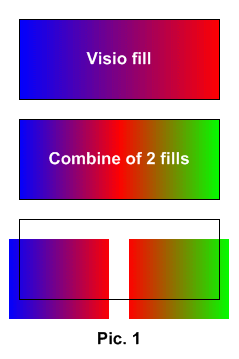
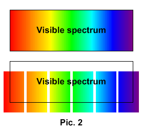
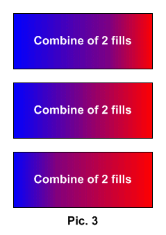
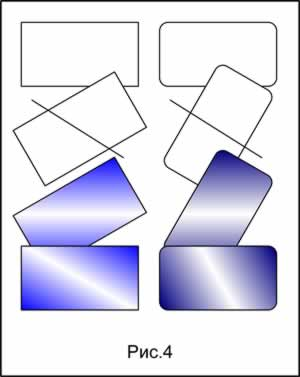
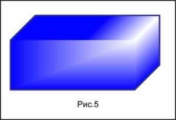
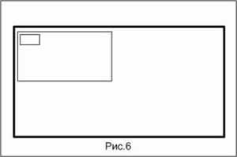

Methods of creation gradient fills in Visio 2000.
 As is known, Visio 2000 can create gradient fills only transition from one color in another by transition through 1 color and only under the certain corner. But sometimes more complex constructions are required. We shall consider some receptions on completely scaled objects.
As is known, Visio 2000 can create gradient fills only transition from one color in another by transition through 1 color and only under the certain corner. But sometimes more complex constructions are required. We shall consider some receptions on completely scaled objects.
- It is possible to make, for example, transition through 2-3 basic colors. How it to make? We take object, we halve his and the rests of this object do consecutive transition through the necessary colors. (Pic. 1)

- Thus, it is possible to make all visible spectrum as one scaled object. (Pic.2)

- Also it is possible to change a saturation of one or other color in fill. It is done by simple displacement of the center (Pic.3)

- If it is required to make fill color under the certain corner it is necessary to make the following. (Pic.4)
- To turn a figure on the necessary angle.
- To draw a line and to apply a command of union. (Shape>Operations>Union)

The given operation can be applied to giving to object of depth. (Pic.5)

Notes and the general advice.
- For scalability of lines it is possible to use more simple method. For this purpose it is required in ShapeSheet, in section LineFormat to enter in cell LineWeight "=Weight/100". After that thickness of lines will change proportionally to object. (Pic.6)

Articles page
Previous article
Next article
Author: Nichkov Alexey (a.k.a. Digitall)